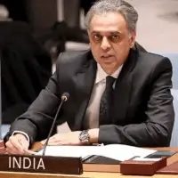

تلقت المبادرة العمانية، "التسامح والتفاهم والتعايش - رسالة السلام من عمان"، تقديرًا من تسع وستين موظفًا دوليًا وأكاديميًا ودبلوماسيًا وإعلاميًا من مختلف الأديان والجنسيات.
فيما يلي بعض الأمثلة لاقتباسات من بعض الشخصيات العامة المشهورة حول هذه المبادرة:

“لقد حان الوقت بشكل عاجل لوصول هذا المعرض الآن إلى مقر الأمم المتحدة في نيويورك. على الرغم من أنه متجذر في التقاليد العمانية، بما في ذلك التسامح، إلا أن هذا المعرض يحمل رسالة للعالم أجمع، لأن الكراهية في تصاعد، من مذبحة الشهر الماضي في مسجد في نيوزيلندا، إلى عمليات القتل في أكتوبر الماضي في كنيس في بيتسبرغ، إلى الهجمات في الكنائس.”
“هذا المعرض هو مساهمة في تعزيز التفاهم المتبادل والتعايش السلمي. يدور هذا المعرض حول معرفة أفضل لبعضنا البعض - ورؤية إنسانيتنا المشتركة في كل واحد منا. نشكر حكومة وشعب عمان على دعمهم ومجهودهم.”
“دعونا نركز جميعًا على ما يوحدنا، ولنعمل معًا للدفاع عن المساواة والكرامة للجميع في كل مكان.”
سعادة السفيرة ماريا لويزا فيوتي
مديرة ديوان السيد الأمين العام لمنظمة لأمم المتحدة

“نحن في الهند ندرك جيدًا تقاليد عمان في التسامح، والتي تعد جسرًا للتفاهم بين الثقافات المختلفة. نحن في الهند نحترم تقليد الاعتدال العماني بشكل كبير.”
سعادة السفير سيد أكبر الدينالممثل الدائم لجمهورية لهند لدى منظمة الأمم المتحدة

“يسعدني أن أكون معكم في هذا المعرض المهم في هذا الوقت المهم. هذه الرسالة هي رسالة الإسلام إلى العالم. هذه الرسالة تعبر عن الجوهر الحقيقي للإسلام.”
“لذلك أعتقد أن هذا المعرض في هذا الوقت يتوافق أيضًا مع الشعور العام بأنه يجب علينا جميعًا الوقوف في وجه الكراهية، وفي مواجهة تشويه الأديان، وفي مواجهة الصورة الزائفة للإسلام التي لا تبرر ذلك، ولا تعكس حقيقة هذا الدين السمح.”
سعادة السفير محمد إدريس
المندوب الدائم لجمهورية مصر العربية لدى منظمة الأمم المتحدة

“يسعدني أن أكون حاضرا في هذا الحفل الهام حول دور الإسلام في إيجاد حلول وسط وتحقيق السلم والأمن الدوليين، وهو أحد الأهداف الرئيسية للأمم المتحدة. تتميز سلطنة عمان بمواقفها المعتدلة والحيادية وبالتالي فهي تحظى بتقدير كبير من قبل المجموعة العربية. كما أنها مكلفة بالتوسط في الخلافات والخلافات بين الأشقاء.”
“نحن فخورون بالدور الذي يقوم به جلالة السلطان قابوس بن سعيد، والدور الذي تقوم به وزارة الخارجية والبعثة الدائمة هنا في نيويورك على حد سواء، من حيث نشر الفكر المعتدل ونبذ التطرف. ومن ناحية أخرى، في دعم الجهود الدولية لإيجاد حلول سلمية للمشاكل العالمية القائمة وخاصة المشاكل العربية التي نراها تتزايد بشكل متزايد في عالمنا العربي، وتحتاج إلى الكثير من الجهد.”
“ونتمنى لسلطنة عمان وقيادتها الرشيدة التوفيق في مبادراتها المستمرة في هذا الاتجاه.”
المراقب الدائم لجامعة الدول العربية لدى منظمة الأمم المتحدة

“من الجيد أن يسلط هذا المعرض الضوء على الأهمية الحيوية للحرية الدينية في عالم لا تُحترم فيه هذه الحرية في كثير من الأحيان.”
“ومن الجيد أيضًا أن يسلط الضوء أكثر على المنابع الإيجابية للمذهب الإباضي للإسلام، والتقاليد المتسامحة في سلطنة عمان على وجه الخصوص. أنا على ثقة من أن هذا المعرض سيوفر مساحة يمكن من خلالها المشاركة والتعلم المتبادل.”
مقتطف من الرسالة الموجهة إلى الجمهور في مركز سانت فيليب في مدينة ليستر من رئيس أساقفة كانتربري، نيافة الأب روان ويليامز، 16 يوليو 2012.

“تساعد مثل هذه المعارض في إلقاء الضوء على تنوع شعوب العالم. كما تساعد على معرفة المزيد عن ثقافات الآخر، وبالتالي التحرك تدريجياً نحو التقارب بين الثقافات.”
“إن الموضوعات المترابطة مثل "التسامح" و"التفاهم" و"التعايش" هي اللبنات الأساسية لثقافة سلام حقيقية، قائمة على الالتزام بالمبادئ العالمية لكرامة الإنسان والتضامن المتبادل. هذا المعرض هو مشروع دولي يتم عرضه لأول مرة هنا في مقر اليونسكو، ويشرفنا حقًا استضافة مثل هذا الحدث الرائع.”
معالي السيد محمد سامح عمرو, رئيس المجلس التنفيذي لليونسكو، والسفير والمندوب الدائم لجمهورية مصر العربية لدى منظمة اليونسكو، بمناسبة افتتاح معرض التسامح في مقر اليونسكو في باريس، 7 أكتوبر 2015.

“من الأهمية بمكان أن نستفيد ونتعلم من أفضل الأمثلة الإقليمية والوطنية للتواصل الشامل - أنا متأكدة من أن هذا المعرض سوف يغذي عزمنا على السعي وراء عالم أكثر سلامًا وعدالة.”
السيدة ندى الناشف، مساعد السيد المدير العام لمنظمة اليونسكو للعلوم الاجتماعية والإنسانية بمناسبة افتتاح المعرض في مقر اليونسكو في باريس، 7 أكتوبر 2015.

“يأتي المعرض في وقت مهم للغاية، حيث يسود العنف والتطرف في جميع أنحاء العالم، مما يؤكد ضرورة التسامح والتفاهم والتعايش.”
فخامة السيد الدكتور جورج فيلا، رئيس جمهورية مالطا، بمناسبة افتتاح المعرض في مدينة فاليتا، 24 أكتوبر 2014.

“يمكن استخدام البريد الإلكتروني أو الرسائل النصية لتبادل المعلومات، ولكن لفهم شخص ما يتطلب الاتصال الشخصي، واللقاءات الشخصية، والمحادثات وجهاً لوجه. لقد قطع البعض منكم شوطًا طويلًا ليكون هنا، وتحديدًا من أجل الحوار الشخصي، من أجل التحاور المتبادل. قد يتم تحقيق التفاهم المتبادل من خلال مناقشة مع شخص ما ، مما يؤدي إلى التوافق.”
“يفتح هذا المعرض حوارًا، ويتيح الاستفسارات، ويخلق نقطة التقاء تشجع على التواصل المباشر. إنه يحفز المناقشات التي تستحق الخوض فيها، ويفتح لنا آفاقًا جديدة حول الدين الإسلامي وحياتنا معًا، سواء كان على المستوى العالمي أو المحلي. إنه خطوة هامة على طريق المستقبل، الذي يبدأ هنا اليوم.”
السيد ماينراد هورفيك، رئيس مجلس مدرسة الكنيسة الكاثوليكية، أوجسبورج، ألمانيا، بمناسبة افتتاح المعرض في المدرسة المهنية رقم 5 في أوجسبورج، 4 يوليو 2011.

“يهدف المعرض إلى تعزيز الحوار بين الأديان، والتفاهم المتبادل والتعايش السلمي. كما يعزز الحوار كأداة للتوافق بين الاختلافات الثقافية والاجتماعية والعرقية من خلال إدراك أوجه التشابه بدلاً من التركيز على التمييز والاختلاف.”
السيد كريستيان مانهارت، ممثل منظمة اليونسكو في دولة نيبال، بمناسبة حفل افتتاح معرض التسامح في متحف باتان في مدينة كاتماندو، 12 نوفمبر 2014.
لاستكشاف فعالياتنا السابقة، تفضلوا بزيارة هذا العرض المرتب زمنيًا، لبعض المختارات من معارض التسامح العالمية »
كما ندعوكم أيضًا لزيارة معرضنا الافتراضي. راجين الله أن تستمتعوا بهذه الجولة الافتراضية وبلغتك المفضلة. مع أجمل الصور، وأوثق المعلومات عن الإسلام والحياة والفنون والتسامح في سلطنة عمان، في هذه الرحلة الرائعة »
تفضلوا بزيارة معرض التسامح العالمي الافتراضي بلغتكم المفضلة